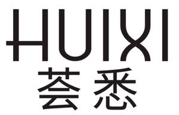

Trade Mark Journal No.2025/033 15 August 2025
UK00004242930 1 August 2025 (3,5,29)

- Class 3
- Lipstick; Cotton wool buds for cosmetic use; Beauty masks; Skin whitening creams; Cosmetic suntan lotions; Hair lotions; False eyelashes; Cosmetic preparations for eyelashes; Makeup; Cotton for cosmetic purposes; Beauty creams; Make-up removing preparations; toothpaste; Cosmetics; Hair shampoos; Fragrances; Skin care cosmetics; Eyebrow pencils; Mascaras; Cleansers for intimate personal hygiene purposes, non-medicated.
- Class 5
- Disinfectants for hygiene purposes; Tonics [medicines]; Medicines for human purposes; Chemical contraceptives; Vaginal washes for medical purposes; Massage gels for medical purposes; Protein dietary supplements; Contraceptive sponges; Biocides; Baby foods; Dietary supplements with a cosmetic effect; nutritional supplements; Dietetic beverages adapted for medical purposes; Sanitary napkins; Sanitary knickers; Cotton swabs for medical purposes; Cotton for medical purposes; Wipes impregnated with disinfectants for hygiene purposes; Vaginal lubricants; Sanitary tampons.
- Class 29
- Edible bird's nests; Meat; Seaweed extracts for food; Canned fish; Pickled fruits; Milk-based beverages containing fruit juice; Milk; Coconut milk; Jellies for food, other than confectionery; Processed nuts; Potato snack foods; Powdered milk; Pickled vegetables; Coconut milk-based beverages; Cream fraiche; Egg nog (Non-alcoholic -); Honey butter; Protein milk; Sour milk; egg whites.
HUIXI INTERNATIONAL COSMETIC CO., LIMITED
Representative: IPSpeedy Limited